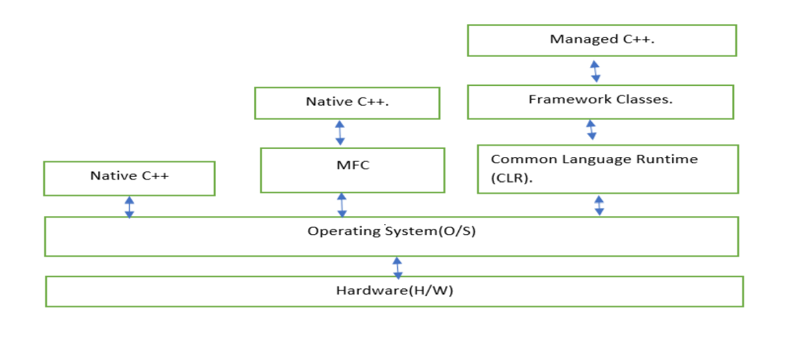
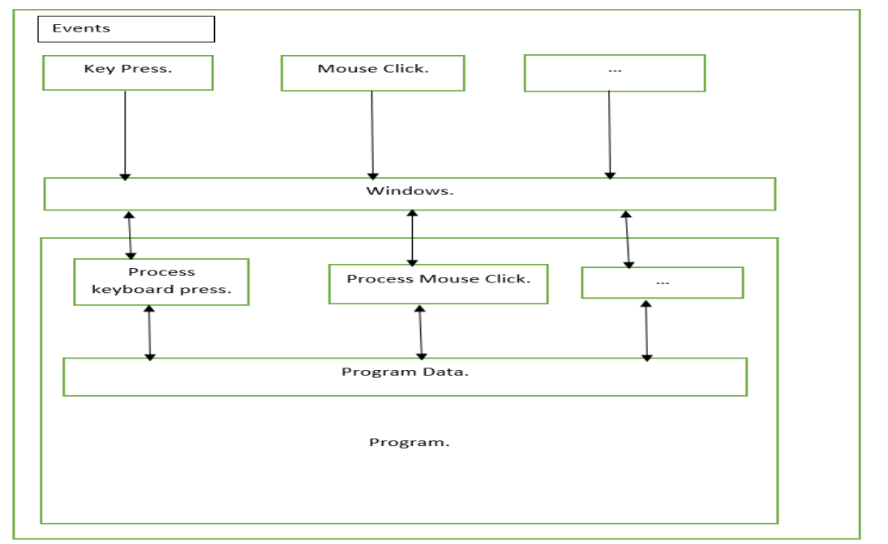

Windows Programming and scripting Language (613)
ASSIGNMENT-I
- Windows applications can be developed using a procedure -oriented approach oin either C or C++.
- All approaches bring together point and shoot control, pop-up menus, and the ability to run applications
written especially for the Windows Environment.
- Windows gives the ability to develop Graphics User Interface(GUI).
- Windows is a graphics-based multitasking operating system.
- Programs developed for this environment have a consistent look and command structure.
- To the user, this makes learning each successive Windows application easier.
- To help in the development of Windows application. Windows provides numerous built-in functions
that allow for easy implementation of pop-up menus, scroll bars, dialog boxes, icons that represent a
user-friendly interface.
- Windows permits the application to work in a hardware-independent manner.
- Basically there are two fundamental different kinds of C++ applications, we can develop with visual C++:
- Application that natively execute on our computer. These applications are referred to as native
C++ programs. We write native C++ program in the version of C++ that is defined
by ISO/ANSI language standard.
- We can also write applications to run under the control of the CLR in an extended
version of C++, called C++/CLI. These Programs are referred to as CLR program or
C++/CLI Program.
- The .Net framework is not strictly part of visual C++, but rather a component of the
windows operating system that makes it easier to build Software(s/w) application.
- Advantage of .Net Framework:
Code Reliability(Fault Tolerance), Security, and Ability to integrate C++ code with other
languages that targets the .Net framework.
-
Common Language Runtime(CLR):
The CLR is a standardized-environment for execution of program written in a wide-range of
high-level languages including visual C++.
Important :
- The specification of the CLR is standardized by European Computer
Manufacturer (ECMA) standard for the Common Language Infrastructure (CLI), and CLR is an
implementation of that standard for Microsoft Windows.
-
That is why C++ for CLR is referred to as C++/CLI, as it is the implementation of
specification of CLI by CLR.
-
Common Language Infrastructure(CLI):
The CLI is a specification for a Virtual Machine environment that enables applications
written in diverse high-level programming language to be executed in different system
environment, without changing or recompiling the original source code.
- The CLI specifies a standard intermediate language for the virtual machine to which the
high-level language code is compiled. With .Net framework, this intermediate language is
called Microsoft Intermediate Language(MSIL). The code in the intermediate language is
ultimately mapped to machine code by a Just-In-Time(JIT) compiler, when we execute the
program.
- Code in the CLI intermediate language can be executed within any other environment
that has a CLI implementation.
- The CLI also defines a common set of data types called the Common Type System(CTS), that
should be used for program written in any programming language targeting a CLI
implementation.
- The CTS specifies how data types are used within the CLR and includes a set of
predefined types. We can Create our own datatypes, but that must be consistent with
CTS.
-
Console Application:
Command line character-based program. Two ways of writing console
application:
- Win32 Console applications, compile to native code. (way we have seen so far).
- CLR Console application.
-
Windows Application:
GUI based program. Three ways of constructing windows application:
- Using Windows Operating System API.
- This will enable us to understand how a windows application works behind the scene.This is the
fundamental interface that the windows operating system provides for
communications between itself and the applications that are executing under its
control.
- Using Microsoft Foundation Class (MFC): Set of classes that encapsulates the Windows
operating system API for GUI creation and program development.

